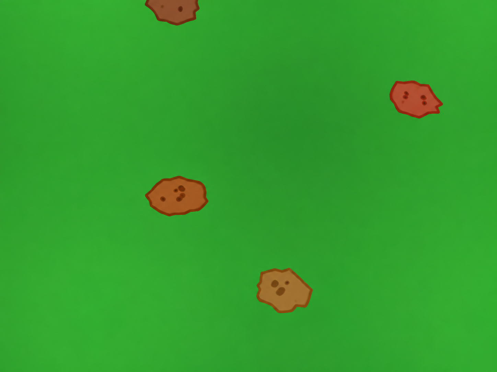

Robótica Computacional 2026.2 - AI
Instruções para a avaliação:
- A prova tem duração de 4 horas.
- Inicie a prova no Blackboard para que a ferramenta Smowl seja iniciada.
- O Smowl é obrigatório durante toda a prova.
- Só finalize o Blackboard depois de enviar a prova para o repositório informado, incluindo o hash do último commit na resposta do Blackboard.
- Durante a prova serão registrados a câmera, a tela, as páginas visitadas, os acessos on-line e o teclado.
- Coloque seu
nomeee-mailnoREADME.mddo seu repositório. - A prova deverá ser realizada individualmente.
- Não é permitido consultar a internet, com exceção do site da disciplina, do Blackboard e do repositório da avaliação informado no Blackboard.
- Não é permitido usar ferramentas de IA, como ChatGPT, Copilot, Gemini ou similares, durante a prova.
- Não é permitido usar ferramentas colaborativas, como Google Docs, Google Slides, Notion ou similares.
- Não é permitido usar ferramentas de comunicação, como Discord, WhatsApp, Telegram ou similares.
- Não é permitido usar editores de código com IA, como Cursor ou Windsurf. É permitido apenas o uso do VS Code, com o Copilot desativado.
- Não é permitido acessar redes sociais, fóruns ou plataformas de comunicação.
- Só é permitido acessar documentos e arquivos estáticos em PDF, TXT, MD, DOCX ou DOC utilizando ferramentas off-line.
- Não é permitido fazer
pushoupullde repositórios que não sejam o repositório da avaliação informado no Blackboard. - Faça commits e pushes regularmente durante a avaliação.
- Eventuais avisos importantes serão feitos em sala.
- Escreva a frase
yeycomo resposta da soma no arquivoREADME.md, como teste de atenção. - A responsabilidade pelo funcionamento da infraestrutura, das configurações e do ambiente é de cada estudante.
- SÓ SERÃO ACEITOS REPOSITÓRIOS DE ESTUDANTES QUE ASSINARAM A LISTA DE PRESENÇA.
BOA PROVA!
Atualização dos pacotes ROS 2
Execute os comandos abaixo para atualizar os pacotes obrigatórios para a prova:
cd ~/colcon_ws/src/my_simulation
git add .
git stash
git checkout main
git pull
cb
Configuração do pacote ROS 2
- Preparação inicial: clone o repositório informado no Blackboard dentro da pasta
~/colcon_ws/src/do SSD. - Criação do pacote: dentro do diretório do seu repositório, crie um pacote chamado
avaliacao_ai. - Para utilizar os módulos desenvolvidos no capítulo 3, inclua
robcomp_utilerobcomp_interfacescomo dependências do pacote.
Exercício 0 - Organização e qualidade (gate)
Este exercício avalia a organização da entrega, a execução dos programas e a qualidade dos vídeos. O descumprimento deste gate limita a nota total da prova a 2,0 pontos.
Critérios do gate
- O pacote
avaliacao_aifoi criado e configurado corretamente. - As dependências do pacote estão declaradas corretamente.
- Todos os scripts da prova estão no módulo Python
avaliacao_aido pacoteavaliacao_ai. - Os nós ROS 2 são executados usando
ros2 run. - Os programas são executados sem alterações manuais durante a demonstração.
- Os vídeos permitem compreender claramente a execução e mostram os terminais solicitados.
- O
README.mdcontém o nome completo, o e-mail e os links solicitados.
Exercício 1 - Segue Comando (5,0)
Baseando-se no código base_control.py do capítulo 3, crie um arquivo chamado q1.py com uma classe denominada SegueComando. A classe deve implementar um nó chamado segue_comando_node, responsável por executar comandos enviados por um Comandante e informar medidas sobre a execução.
O Comandante publica no tópico /comando, usando mensagens do tipo robcomp_interfaces.msg.ComandanteMSG. O nó do aluno responde no tópico /resposta, usando mensagens do tipo robcomp_interfaces.msg.RoboMSG.
Toda mensagem enviada pelo robô deve conter o nome completo do aluno e o horário atual, preenchidos nos campos apropriados. O horário deve ser atualizado a cada publicação; não copie o valor recebido do Comandante.
Para verificar as interfaces instaladas, utilize:
ros2 interface show robcomp_interfaces/msg/ComandanteMSG
ros2 interface show robcomp_interfaces/msg/RoboMSG
Comandos
O Comandante pode enviar os seguintes comandos, com os parâmetros preenchidos nos campos apropriados:
andar: andar em linha reta a distância positiva indicada, em metros.girar: girar o ângulo indicado, em graus. Valores positivos representam o sentido anti-horário e valores negativos, o sentido horário.parar: interromper imediatamente um comandoandarougirar.quadrado: completar um quadrado de lado1,0 me retornar à pose inicial.triangulo: completar um triângulo equilátero de lado1,0 me retornar à pose inicial.erro: responder com o erro da tarefa atual ou da última forma concluída, conforme descrito abaixo.
Os comandos quadrado e triangulo não serão interrompidos pelo Comandante.
Estados e respostas do robô
O robô deve utilizar somente os sseguintes valores no campo apropriado de estado da mensagem RoboMSG:
READY: publicado uma única vez, no início do nó para iniciar a execução (publicar novamente reinicia o Comandante).IN_PROGRESS: publicado uma única vez quando o robô começa um movimento.STOPPED: utilizado nas respostas enviadas enquanto o robô estiver efetivamente parado.
Ao receber parar, o robô deve primeiro interromper o movimento e somente então responder STOPPED. Depois dessa resposta, o Comandante enviará erro:
- se a tarefa interrompida for
andar, o robô responde com a distância que falta, em metros; - se a tarefa interrompida for
girar, o robô responde com o módulo do ângulo que falta, em graus. - se a última tarefa for
quadradooutriangulo, o robô responde com a deriva da forma, em metros.
Deriva é a distância euclidiana, em metros, entre a posição em que o robô inicia uma forma geométrica e a posição em que termina essa forma.
Sequência do Comandante
Em cada execução, o Comandante:
- envia dois comandos, sempre um
andare umgirar, em ordem aleatória; - envia
parardurante cada uma dessas tarefas; - aguarda o robô responder
STOPPED, enviaerroe segue para o próximo comando; - depois que
andaregirarforem interrompidos, escolhe aleatoriamentequadradooutriangulo; - aguarda o robô concluir a forma e responder
STOPPED; - envia
erro, a deriva informada pelo robô e encerra a sequência.
Simulador
Utilize o comando abaixo para iniciar o simulador:
ros2 launch my_gazebo ai_2026_2.launch.py
Para verificar a comunicação, mantenha dois outros terminais exibindo os tópicos:
ros2 topic echo /comando
ros2 topic echo /resposta
Requisitos
- Deve existir um arquivo chamado
q1.py. - A classe deve se chamar
SegueComandoe o nó,segue_comando_node. - O nó deve assinar
/comandocomrobcomp_interfaces.msg.ComandanteMSGe publicar em/respostacomrobcomp_interfaces.msg.RoboMSG. - A implementação deve seguir a estrutura de máquina de estados do exemplo
base_control.py. - A função
controldeve ser a única a publicar no tópico/cmd_vele deve permanecer idêntica à função fornecida no exemplo. - Não é permitido usar
sleep, loops infinitos ou loopswhilepara controlar o movimento dentro de estados. - O robô deve parar imediatamente ao receber
parar, responderSTOPPEDe permanecer imóvel até receber o próximo comando do Comandante. - Toda
RoboMSGdeve conter o nome completo do aluno e o horário atual nos campos apropriados. - Cada mudança de estado e cada solicitação de
errodevem produzir exatamente uma resposta em/resposta; não é permitido publicar continuamente ou enviar spam.
Rúbrica
- +0,5: comunica-se com os tipos customizados, preenchendo todos os campos apropriados e sem enviar spam.
- +1,0: executa corretamente os comandos
andaregirarnos dois sentidos, usando odometria. - +1,0: interrompe imediatamente
andaregirare informa corretamente quanto faltava para concluir cada tarefa. - +1,0: executa corretamente
quadradooutrianguloe retorna próximo da posição inicial. - +1,5: calcula e publica corretamente a deriva da forma concluída.
Os itens são cumulativos: um item pressupõe o funcionamento dos anteriores.
Vídeo
Grave um vídeo contínuo mostrando:
- o terminal do nó do robô;
- o terminal da simulação;
- o
echode/comandoe/resposta; - as interrupções de
andaregirare os respectivos erros informados; - a execução completa da forma geométrica;
- a resposta final contendo a deriva.
Publique o vídeo no YouTube e inclua apenas o link no README.md. Entregas parciais são aceitas, sem garantia de nota; explique no README.md e na descrição do vídeo até onde a implementação funciona.
Exercício 2 - Contador de Batatas (5,0)
LINK DOWNLOAD DOS VIDEOS: https://insper.github.io/robotica-computacional/provas/ai/videos_batatas.zip
Crie um arquivo chamado q2.py com uma classe ProcessaImage e um método roda_video:
class ProcessaImage:
def roda_video(self, caminho_video: str) -> int:
...
O método deve abrir um vídeo por vez, contar quantas batatas atravessam a cena e retornar esse total como int.
Os vídeos possuem fundo verde e batatas marrons. Em cada vídeo, as batatas seguem trajetórias paralelas em um único sentido, que pode ser horizontal, vertical ou diagonal. As velocidades podem ser diferentes, mas não ocorrem colisões. Cada batata deve ser contada apenas uma vez.

Ao final, durante o processamento, você deve exibir uma janela contendo:
- o contorno de cada batata detectada;
- a trajetória de cada batata;
- o contador atualizado de batatas.
Ao terminar o vídeo, deve imprimir o total:
Total de batatas: <quantidade>
Dica
Para abrir um vídeo com OpenCV, utilize cv2.VideoCapture:
cap = cv2.VideoCapture(caminho_video)
while cap.isOpened():
ret, frame = cap.read()
if not ret:
break
# Processar o frame
cap.release()
Dica
Para escrever o contador na imagem com OpenCV, utilize cv2.putText:
cv2.putText(
frame,
f"Batatas: {contador}",
(20, 40),
cv2.FONT_HERSHEY_SIMPLEX,
1,
(255, 255, 255),
2,
cv2.LINE_AA,
)
Requisitos
- Deve existir um arquivo chamado
q2.py. - A classe deve se chamar
ProcessaImagee possuir o métodoroda_videocom a assinatura especificada. - O método deve abrir o vídeo com
cv2.VideoCapture, processá-lo até o fim e retornar umint. - A solução deve segmentar e rastrear as batatas, desenhando suas trajetórias.
- Cada batata deve ser contada exatamente uma vez, mesmo permanecendo visível durante vários frames.
- A visualização deve mostrar os contornos, as trajetórias e o contador atualizado.
- A solução será avaliada também com um vídeo oculto, não disponibilizado previamente. Não é permitido determinar a resposta pelo nome ou pela duração do arquivo.
Rúbrica
- +0,5: segmenta todas as batatas nos vídeos.
- +1,0: identifica todas as batatas nos vídeos.
- +1,5: conta cada batata uma única vez, sem duplicar objetos presentes em vários frames.
- +1,5: identifica e desenha as trajetórias das batatas.
- +0,5: retorna e imprime o total de batatas no vídeo.
Os itens são cumulativos: um item pressupõe o funcionamento dos anteriores.
Vídeo
Grave um vídeo mostrando o processamento completo de um dos vídeos fornecidos, incluindo a janela do OpenCV e o total final impresso no terminal. Publique-o no YouTube e inclua apenas o link no README.md.